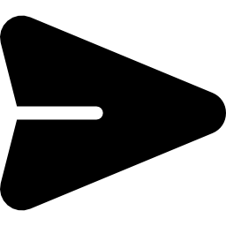

CritiCode
Activity Instruction
The Chef likes to stay in touch with his staff. So, the Chef, the head server, and the sous-chef all carry two-way transceivers so they can stay in constant contact. Of course, these transceivers have a limited range, so if two are too far apart, they cannot communicate directly. However, they can still communicate if a third transceiver within range can act as a relay. Help the Chef determine if it’s possible for all three to communicate with each other, even indirectly, given the range R and the coordinates of each person.
My Code Solution
import math no_of_testcases = int(input()) for each in range(no_of_testcases): dist = int(input()) point_1 = map(int, input().split()) point_2 = map(int, input().split()) point_3 = map(int, input().split()) point_12 = math.sqrt(math.pow((point_1[0] - point_2[0]), 2) + math.pow((point_1[1] - point_2[1]), 2)) point_23 = math.sqrt(math.pow((point_2[0] - point_3[0]), 2) + math.pow((point_2[1] - point_3[1]), 2)) point_31 = math.sqrt(math.pow((point_3[0] - point_1[0]), 2) + math.pow((point_3[1] - point_1[1]), 2)) count = 0 if point_12 <= dist: count += 1 if point_23 <= dist: count += 1 if point_31 <= dist: count += 1 if count >= 2: print("yes") else: print("no")

Generated Feedback
Feedback will appear here once generated...